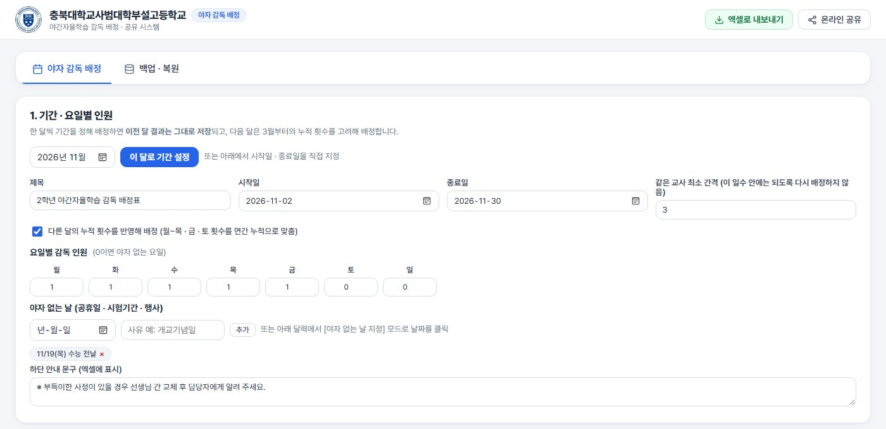
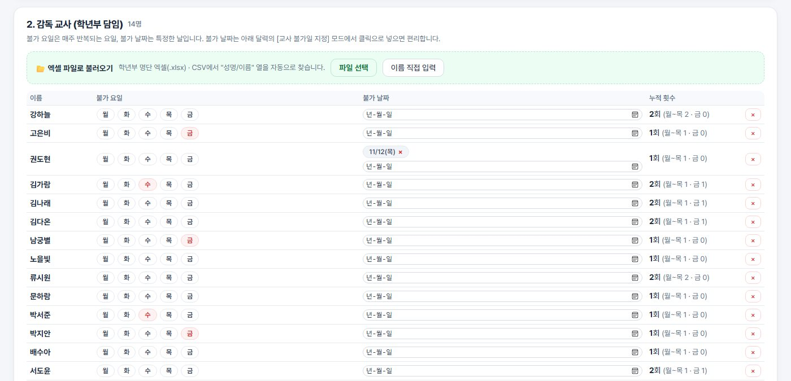
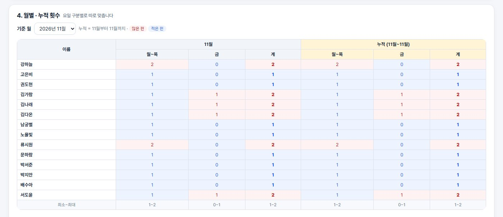
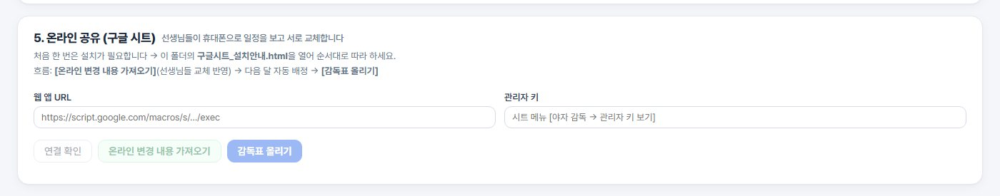

한눈에 보기
프로그램은 위에서부터 1 → 5 순서의 카드로 되어 있어요. 1~2번에서 조건을 넣고, 3번에서 자동 배정 실행을 누르면 끝입니다.
공평한 자동 배정
불가 요일·날짜는 피하고, 같은 선생님이 며칠 안에 다시 걸리지 않게 하며, 월~목 · 금 · 토 횟수를 연간 누적으로 맞춥니다.
달력에서 바로 수정
날짜를 눌러 감독을 바꾸면 🔒 잠금되어 다시 배정해도 그대로 유지됩니다. 결과는 엑셀로 내보내기.
휴대폰으로 교체
구글 시트를 연결하면 선생님들이 이름+PIN으로 들어와 내 일정 확인, 날짜 맞바꾸기·대신 서 주기 요청을 합니다.
기간 · 요일별 인원 정하기

감독 교사 등록

자동 배정 실행 · 달력에서 고치기
월별 · 누적 횟수 확인과 엑셀 내보내기

기준 월을 고르면 그 달 횟수와 3월부터 그 달까지의 누적이 월~목 · 금 · 토 구분별로 나옵니다. 많은 편은 빨강, 적은 편은 파랑으로 칠해져 한눈에 비교돼요.
오른쪽 위 엑셀로 내보내기를 누르면 배정표가 엑셀(.xlsx) 파일로 저장됩니다. 그대로 인쇄하거나 메신저로 보내세요.
온라인 공유 — 선생님들이 휴대폰으로 확인·교체
엑셀 배정표만 쓰신다면 이 단계는 건너뛰어도 됩니다. 처음 한 번 구글 시트를 설치하면(약 15분), 선생님들이 웹 링크로 들어와 아래 일을 할 수 있어요.
이름을 고르고 PIN(처음 접속 때 직접 정함)으로 들어와 내 감독 일정을 봅니다.
날짜 맞바꾸기 / 대신 서 주기를 요청하고, 상대 선생님이 수락하면 바로 반영됩니다.
월~목 · 금 · 토 횟수를 확인합니다. 휴대폰 홈 화면에 추가하면 앱처럼 쓸 수 있어요.
- 새 구글 스프레드시트 → 확장 프로그램 → Apps Script
Code.gs붙여 넣기, HTML 파일 Teacher를 만들어Teacher.html붙여 넣기 → 저장- 시트 새로고침 → 메뉴 야자 감독 → 초기 설정 · 관리자 키 보기 → 권한 허용 → 관리자 키 복사
- 배포 → 새 배포 → 웹 앱, 실행: 나, 액세스: 모든 사용자 → 웹 앱 URL 복사
- 프로그램 5. 온라인 공유에 웹 앱 URL과 관리자 키를 넣고 연결 확인 → 감독표 올리기
- 웹 앱 URL을 선생님들께 메신저로 보냅니다.

액세스를 "모든 사용자"로 해도 이름과 PIN으로 로그인해야 일정을 볼 수 있고, 시트 자체는 공개되지 않습니다. PIN을 잊은 선생님은 시트 메뉴 야자 감독 → 선생님 PIN 초기화로 풀어 주세요.
매달 쓰는 순서
- ①온라인 변경 내용 가져오기
선생님들끼리 바꾼 내용이 들어오고, 바뀐 날은 🔒 잠금 (공유를 쓸 때만)
- ②다음 달로 기간 설정
야자 없는 날과 불가일을 확인
- ③자동 배정 실행
누적 횟수가 반영되어 공평하게 배정
- ④엑셀 내보내기 · 감독표 올리기
인쇄·메신저 공지 또는 온라인 공유
저장 · 백업 · 유의사항
- 입력한 내용은 이 브라우저에만 저장됩니다. 브라우저 기록을 지우거나 다른 컴퓨터에서 열면 보이지 않으니, 백업 · 복원 탭에서 백업 파일을 저장해 두세요. 다른 컴퓨터에서는 그 파일을 불러오면 됩니다.
- 인터넷이 막힌 환경이나 학교 PC에서 따로 쓰고 싶다면 전체 파일(zip)을 받아 압축을 풀고
index.html을 열어 쓰세요. (엑셀 내보내기는 인터넷이 필요합니다) - 화면 위쪽의 학교 이름과 로고는 만든 학교 기준입니다. 배정표 제목과 안내 문구는 프로그램 안에서 자유롭게 바꿀 수 있어요.
정기고사 감독 배정 프로그램도 함께 쓰실 수 있어요.